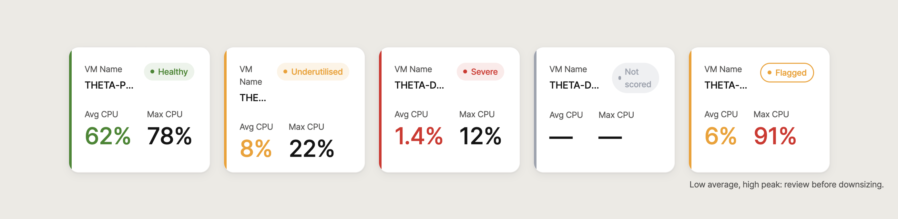
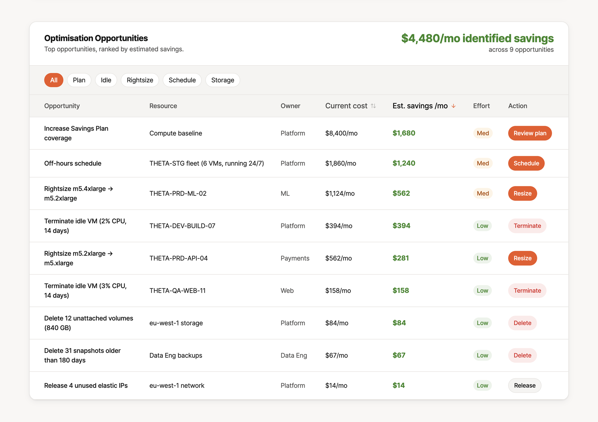
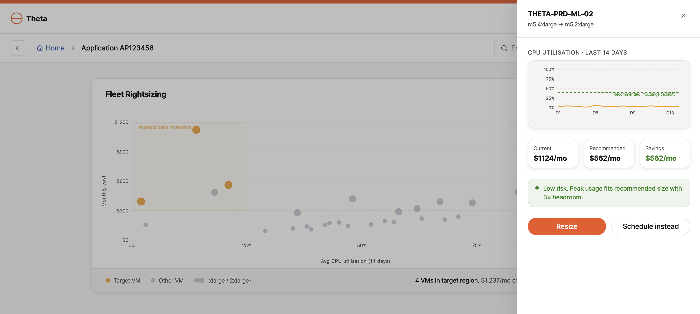
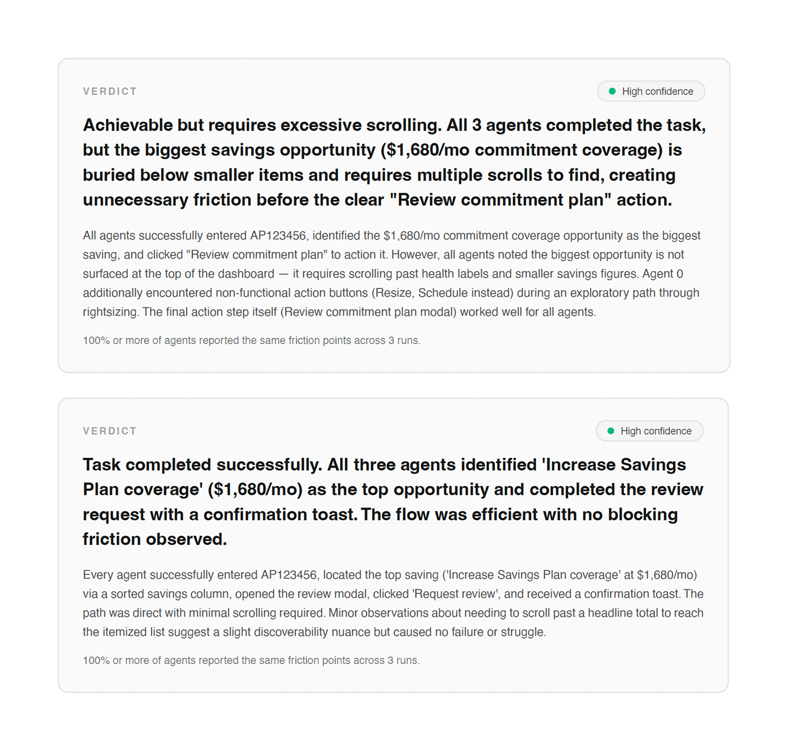

A conversational product that made users do the hard part
Behind the AI/ML FinOps chatbot, a daily pipeline pulled utilisation metrics from virtual machines across the cloud estate. I owned the chatbot's front-end UX: prompt patterns, context gathering, feedback loops.
But the product had a structural limit. It could answer detailed FinOps questions, yet the value was locked behind knowing the right question. To find underused machines, you already had to suspect they were there.
That is a lot to ask of a busy engineer who just wants to know whether their estate is healthy. So I designed a visual layer to sit alongside it.
“Show me, don't make me ask”
I ran the chatbot through moderated usability sessions. One theme surfaced again and again: people wanted to see the data, not interrogate it. “Would love a graph to visualise this.” “Add labels and structure so I can scan it.” “Just show me what needs attention.”
Answers that were accurate but dense made users work to interpret them. The research pointed clearly past a better chatbot, toward a visual layer.
It wasn't “make the chatbot smarter.” It was “let me scan before I ask.”
A dashboard that answers one question first
I designed the dashboard around a single question: what needs attention, and what should I do next? You enter an Application, Product, or Product Line ID; the dashboard resolves the right level of data and shows a colour-coded summary.
For an application, every VM appears as a card grouped by environment, DEV, QA, PROD, showing its name, average CPU, a traffic-light status, and a review flag where relevant.

A simple score, the ratio of green machines, rolls the same logic up the hierarchy: Product Line → Product → Application → VM. Whatever level you enter at, status reads the same way.
Connecting insight to action
The dashboard wasn't built to report; it was built to move people to the next step. For an underutilised machine, the design put the actions right there: right-sizing guidance, a button to open the chatbot pre-scoped to that VM, and a button to raise a resizing ticket.
That join is the point, scan visually first, drop into chat for the follow-up, escalate without leaving the page.
After the usability round, VM cards gained Max CPU alongside Average CPU. Average alone could make a machine look idle when it was actually spiking periodically; Max CPU let reviewers tell “genuinely underused” from “quiet most of the time, critical occasionally.”
From “here is the data” to “here is what needs attention, and here is what you can do about it.”
From utilisation to cost action
The utilisation view answered what needs attention. The obvious next question was what it is worth to fix.
I researched how FinOps tools like CloudZero, Kubecost, and Vantage turn cost data into engineer action, and extended the prototype with the patterns the space converges on: a ranked opportunities table where every row carries an estimated saving, an owner, and an action; a utilisation-versus-cost scatter for rightsizing calls; and commitment coverage tracked against target.
One rule governed all of it: every visualisation ends in an action with a dollar value, not a chart to admire.


Three AI personas, one hierarchy problem
Before polishing, I wanted evidence the hierarchy worked. A heuristic pass predicted a problem: the page led with a health score while savings figures sat scattered at different scroll depths. I pressure-tested the prediction with agentic AI evaluation, running three AI personas configured as platform engineers through a task: find the biggest saving and action it.
All three completed it. All three also picked a different number as the biggest saving, and one hit action buttons that failed silently. “That kind of dead button is how people stop trusting the page.”
Three changes followed: the commitment recommendation became the top-ranked table row, the savings total moved into the page header above the health score, and every action was wired to one confirm-and-ticket pattern. The retest with fresh personas: 3 of 3 completed in 6 to 8 steps, all named the same top opportunity, verdict clean.

AI agents are not users, and this is not user testing. It is a fast way to test a hierarchy hypothesis before spending anyone's time. But when three evaluators fail the same way, then stop failing after one structural change, that is signal.
Question-led to discovery-led to action-led
The chatbot asked users to arrive with the perfect prompt. The dashboard surfaces what needs attention first. The extension prices it and hands over the action.
The evaluation loop, heuristic pass, agent test, redesign, retest, is now part of how I would run the next iteration too. I built and tested the prototype independently from the brief; it is the interactive piece at the top of this page.